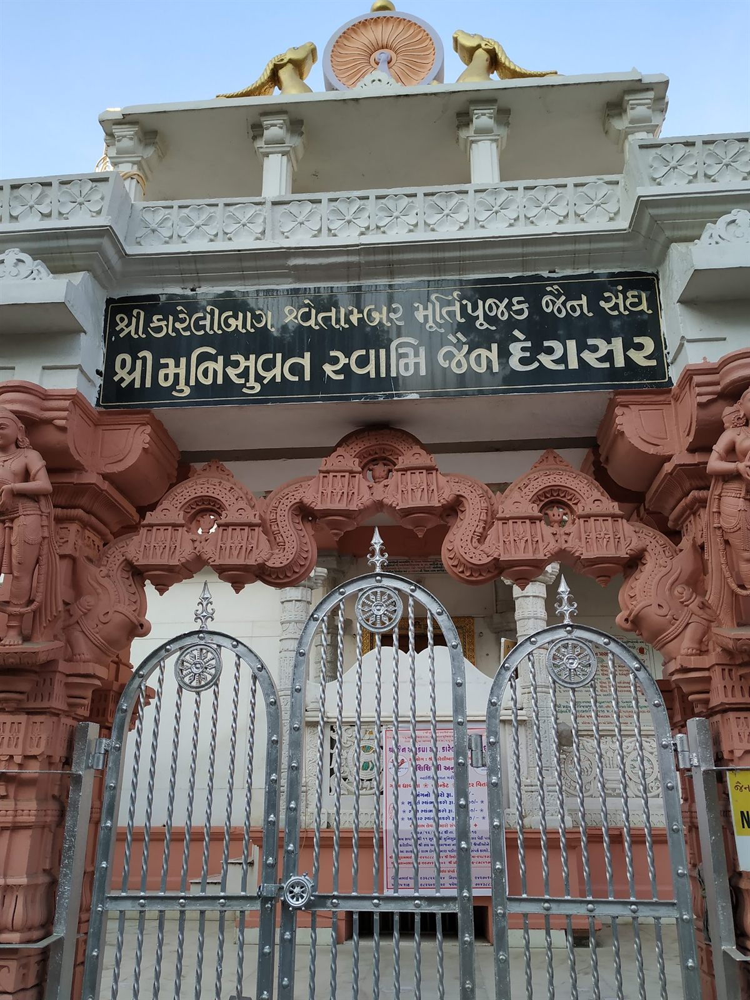
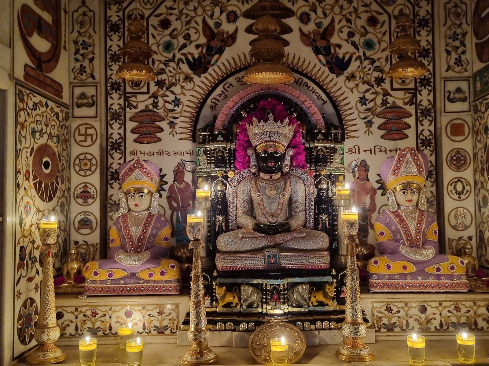
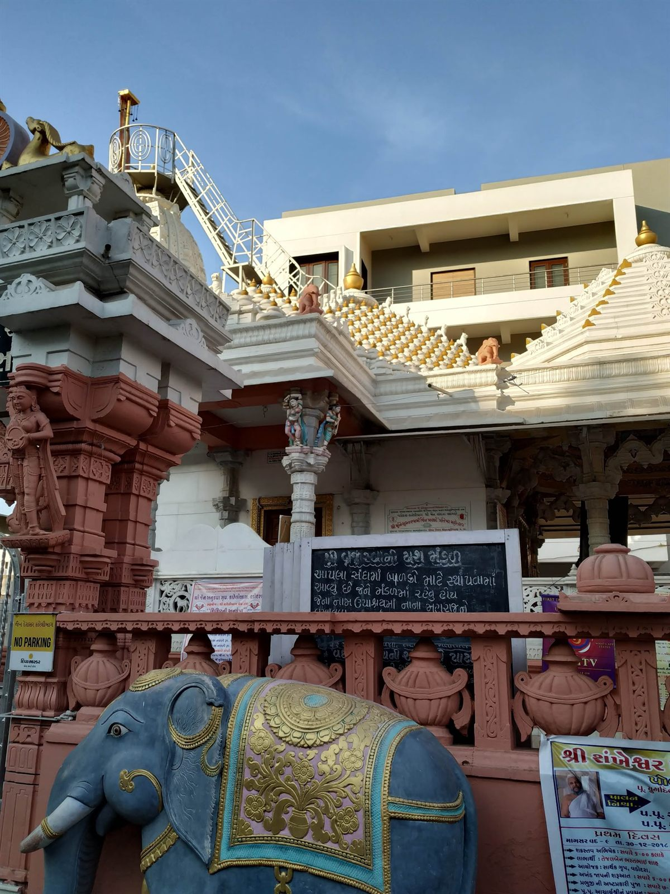
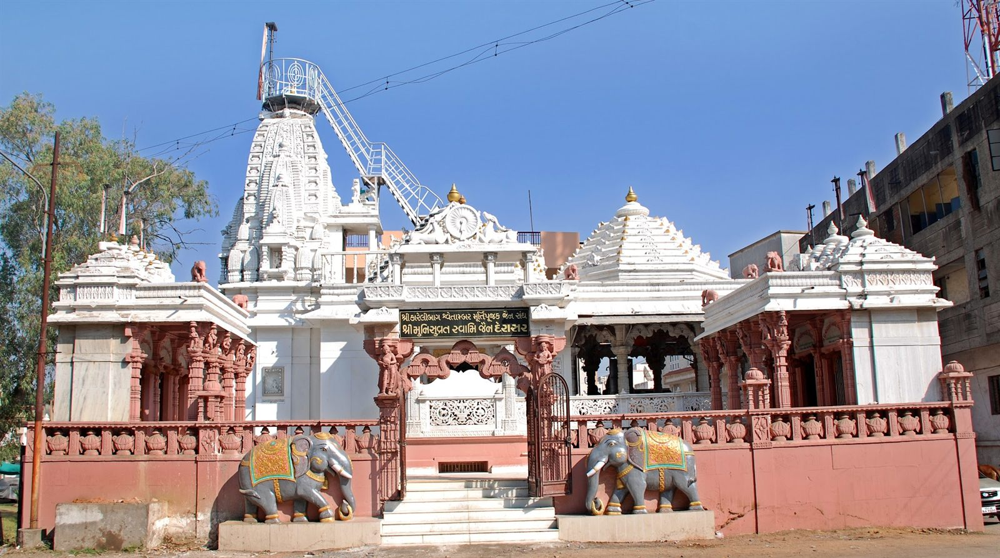
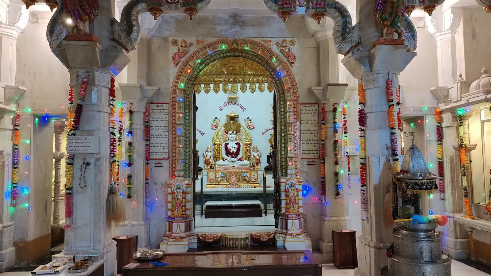

The Derasar
White marble above, rose sandstone below, and behind the silver doors a black stone Jina seated in the same posture the tradition has held for twenty-five centuries.
Shri Munisuvrat Swami Bhagwan
The twentieth Tirthankara of this descending half-cycle, and the Jina whose name this derasar carries.
He was born at Rajgruhi — Rajgir, in present-day Bihar — to King Sumitra and Queen Padmavati of the Harivamsha line. Tradition gives his complexion as shyam, dark as the stone the idol here is carved from, and his lanchhan, the emblem cut into the base of the pedestal, as the tortoise — kūrma, the creature that withdraws its limbs and rests entirely within itself. It is not an accidental symbol for a Tirthankara. His attendant deities are the yaksha Varuna and the yakshini Naradatta, and his nirvana was at Sammet Shikhar.
What you actually see in the gabhara is a black idol robed in gold, under a triple chhatra, framed by a gilded parikar in which smaller Jina figures sit in tiers. His name is written above the arch in Gujarati letters — શ્રી મુનિસુવ્રત સ્વામી ભગવાન — and around it the marble is inlaid with coloured stone: lotuses, kalash, hanging chhatras, and celestial figures bearing offerings.

A shikhar-bandhi derasar, in two stones
Almost everything about the exterior can be read from the street, once you know what the parts are called.
Shikhar & dhwaja-danda
The tall curvilinear tower over the gabhara, ribbed with miniature urushringa spirelets and topped by the amalaka and kalash. Above them the dhwaja-danda carries the temple flag.
The steel ladder and railing bolted to the side of the tower are not decoration. Somebody has to climb up there and change the dhwaja, and this is how they do it.

Torana & the gate
The entrance arch is carved in rose sandstone with makara-mukha brackets and standing figures on the pillars. Above it sits the dharmachakra, flanked by two golden lions.
Beneath that, the Sangh’s black nameplate in gold Gujarati letters — શ્રી કારેલીબાગ શ્વેતામ્બર મૂર્તિપૂજક જૈન સંઘ — and below it the name of the derasar itself.
Elephants & the kalash frieze
A pair of painted stone elephants in gold-worked jhools stand at the foot of the steps — the auspicious gaja of the temple threshold, and the first thing every child who comes here goes to touch.
The low boundary wall is finished in terracotta plaster and crowned with a repeating row of carved kalash finials: the band that makes the whole complex read as one thing from the road.

Rangmandap, silver doors & the floor
Inside, the assembly hall carries painted and gilded woodwork: elephants and seated Jina figures along the frieze, and brackets of apsaras under the beams.
The gabhara is closed by silver-plated doors worked with standing figures, with a hanging toran of silver ghantis along the lintel.
Underfoot, white marble laid with coloured-stone inlay — running vine borders and large central lotus medallions, the sort of floor you notice only when you look down mid-chaityavandan.


Other shrines in the complex
The compound holds more than the one gabhara. Walk the circuit and you pass:
- ShrineShri Simandhar Swamiશ્રી સીમંધર સ્વામી
A white marble Jina in his own gabhara, kept garlanded and lit. The Aarti and Mangal Divo verses are painted on marble panels on either side, so the whole hall can sing them without a book.
- DevalayaShri Ghantakarna Mahavirશ્રી ઘંટાકર્ણ મહાવીર
Under the pillared sandstone mandap on the flank of the temple — the adhisthayak devalaya where people stop with the requests they do not make in the main gabhara.
- NicheShri Gautam Swamiશ્રી ગૌતમ સ્વામી
A small niche off the rangmandap, remembered especially on Bestu Varsh, the morning of his kevalgnan.
- MantraShri Shankheshwar Parshwanathશ્રી શંખેશ્વર પાર્શ્વનાથ
Named on the marble mantra plaque beside the Simandhar Swami shrine, alongside the Mulnayak and Neminath — the four invocations the Sangh keeps on the wall.
The hall, the tirth-patas and the pathshala
Behind the temple is a plain, cool marble-lined hall — and on its walls three large framed tirth-patas: gold-worked panoramas of the great Jain tirths, hills covered in tonks and temples with the pilgrim path winding up through them. Shatrunjay, Girnar, Sammet Shikhar — the places the Sangh travels to when the chaturmas ends and the yatra season opens at Kartik Purnima.
The same hall does everyday duty. A blackboard leans against one wall: the pathshala, where the children of the Sangh learn the sutras, the ashtaprakari puja and the stavans. Notices for it go up on the compound wall beside the mahotsav banners.
The Sangh also lends its address to the Jain Anukampa Group, Karelibaug, whose banners hang on the same railings — medical camps, medicine help, and the jeev-daya work that goes out from here into the surrounding wards.

Shri Karelibaug Shwetambar Murtipujak Jain Sangh
શ્રી કારેલીબાગ શ્વેતામ્બર મૂર્તિપૂજક જૈન સંઘ
Shwetambar — the “white-clad” tradition, whose mendicants wear unstitched white cloth. Murtipujak — the branch that keeps and worships idols in temples, as distinct from the Sthanakvasi and Terapanthi traditions that do not. This derasar sits squarely in that lineage, and the puja performed here follows its vidhi.
The Sangh’s work is unglamorous and unbroken: the pujari who opens the gabhara before six, the flowers and kesar that have to be there every single morning, the ghee for the lamps, the marble that needs washing, the shikhar that needs repair, the mahotsav that has to be organised, the pathshala teacher, the anukampa fund. Nothing about a derasar runs itself.
What the marble tells us is who gave. The pratishtha plaques set below the three idols record the donor families of each: a household from Kosamba for the Mulnayak, one from Vadodara for Shri Mahavir Swami, and one from Dahegam for Shri Naminath. Three towns, one gabhara.
Come and see it for yourself
A photograph can carry the carving. It cannot carry the smell of kesar and ghee, or the sound of the ghanti at aarti.